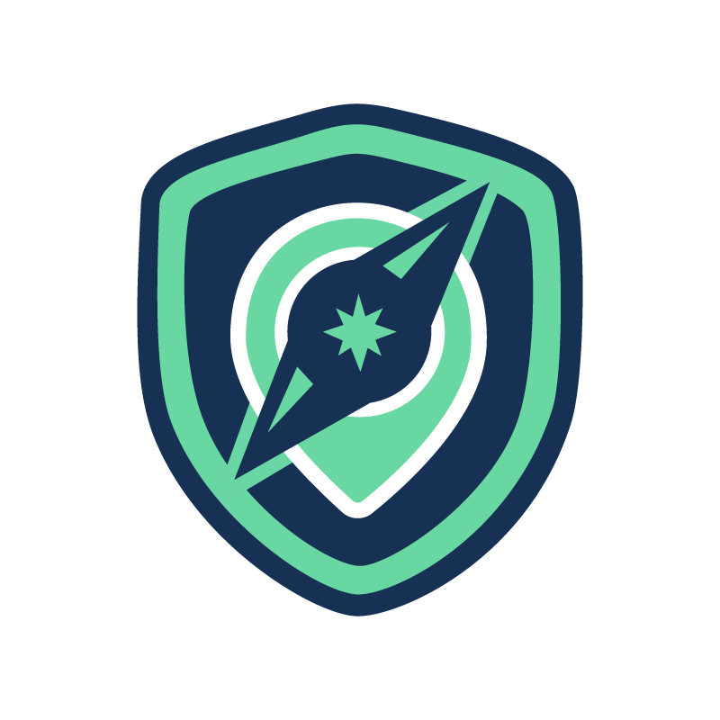

Guardi
mate
Safety Companion
SAFE PATH ON
SAFE PATH ACTIVE
위험 구역을 우회하는 경로가 활성화되었습니다
🔎
🖐 탭: 목적지 변경 · 🚩: 위험 제보
👮 경찰서 · 🚒 소방서 · 🏥 병원 (경로 2km)
🚨 위험/통제 뉴스 (약 30km)
치안 위험
재난·침수
인프라 차단
커뮤니티 제보
🚩
🚶 도보
🚗 운전
목적지 탐색 중...
경로 계산 중...
—
ETA
보호자 동행 시작
실시간 위치·경로 이탈을 보호자에게 공유
OFF
AI
현재 위치를 확인하고 있어요. 위치 권한을 허용하면 실제 내 위치 기준으로 안전 경로를 계산합니다.
AI
GUARDIMATE AI
● 온라인 · 지도 연동됨
안녕하세요! GUARDIMATE AI 안전 비서입니다. 🛡️ 현재 Safe Map과 연동되어 있어요. 경로, 주변 위험 정보, 응급 대처 요령 등 무엇이든 물어보세요.
🗺️ 가장 안전한 경로는?
⚠️ 주변 위험 요약
🌙 심야 귀가 수칙
🚨 응급 대처 요령
원터치 응급 SOS
버튼을 누르면 5초 후 응급 연락처로
현재 위치와 긴급 알림이 전송됩니다
SOS
탭하여 활성화
대기 중
전송 취소
⏱ 안전 타이머 · 도착 체크인
예상 이동 시간을 설정하세요. 시간 내에 '무사 도착'을 누르지 않으면 보호자에게 마지막 위치와 함께 미응답 알림이 자동 전송됩니다.
15분
30분
60분
00:00
✅ 무사 도착
타이머 취소
🚓 현지 긴급 연락처
긴급 신고 (경찰·소방·구급)
현지 통합 긴급번호 (호주 000 · 미국 911)
발신
대한민국 영사콜센터
해외 사건·사고 24시간 접수
+82-2-3210-0404
지정 보호자
Emergency Contact · SOS 자동 전송 대상
발신
이
안녕하세요, 사용자님!
해외 체류 중 · 위치 확인 중
언어 / Language
앱 표시 언어 · App language
한국어
English
日本語
中文
Español
Deutsch
Français
테마
테마 선택
색 · 밝기 · 장식 · 로고가 함께 바뀝니다 (안전=그린은 항상 유지)
💡
Light
🌙
Dark
🌸
봄
☀️
여름
🍁
가을
🎄
겨울
🎃
할로윈
위험 알림 설정
치안 및 위험 동향
심야 우범 구역 · 주취자 대치 · 가로등 결함
실시간 재난 경보
침수 위험 구역 · 태풍 · 산불 등 물리적 긴급 경보
인프라 차단 정보
도로 파손 · 긴급 굴착 공사 · 교통 통제
커뮤니티 제보 구역
사용자들이 직접 제보한 위험 · 지도를 길게 눌러 제보
심야 위험 가중
야간(21~06시)에 치안 구역 반경 자동 확대 · 우회 강화
지도 스타일
지도 테마
다크
표준
위성
응급 연락처 관리
지정 보호자 번호
SOS 발생 시 위치·알림 자동 전송 대상
저장
번호가 등록되지 않았습니다
영사콜센터 연동
해외 사건·사고 접수 시 안내 · +82-2-3210-0404
🧪 타이머 테스트 모드
안전 타이머를 15초로 단축 실행 · 텔레그램 알림 동작 확인용
AI 연결
AI Core Chat 연결 방식
기본 내장 Gemini API 키로 자동 연결됩니다. 다른 키를 쓰려면 아래에 입력하세요. 연결 실패 시 내장 오프라인 어시스턴트가 대신 답변합니다.
저장
연결 상태: 첫 메시지 전송 시 자동 판별
데이터 소스 공개
본 서비스는 아래 출처의 데이터를 투명하게 활용합니다
🗺 OpenStreetMap (지도·도로망)
🧭 OSRM (도보 경로)
🏢 Overpass API (경찰서·소방서·병원, 도로 그래프)
📍 Nominatim (역지오코딩)
🌦 OpenWeatherMap (실시간 날씨)
📰 GNews (위험·통제 뉴스)
🤖 Google Gemini (AI 챗봇)
지도 © OpenStreetMap contributors · Leaflet
※ 데모의 위험 구역(치안·재난·인프라)은 시연용 시뮬레이션 데이터입니다
Safe Map
AI Core Chat
Emergency
Settings
🚩 커뮤니티 위험 제보
이 위치의 위험을 다른 사용자와 공유합니다. 제보 구역은 즉시 안전 경로 회피 계산에 반영됩니다.
💡 가로등 고장
🚧 공사·통제
🌊 침수·물웅덩이
⚠ 위협·치안 불안
유지 시간
1시간
6시간
24시간
취소
제보 등록